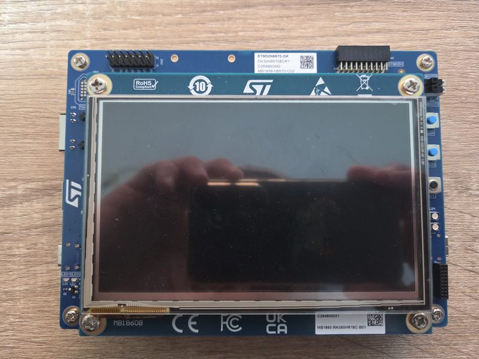
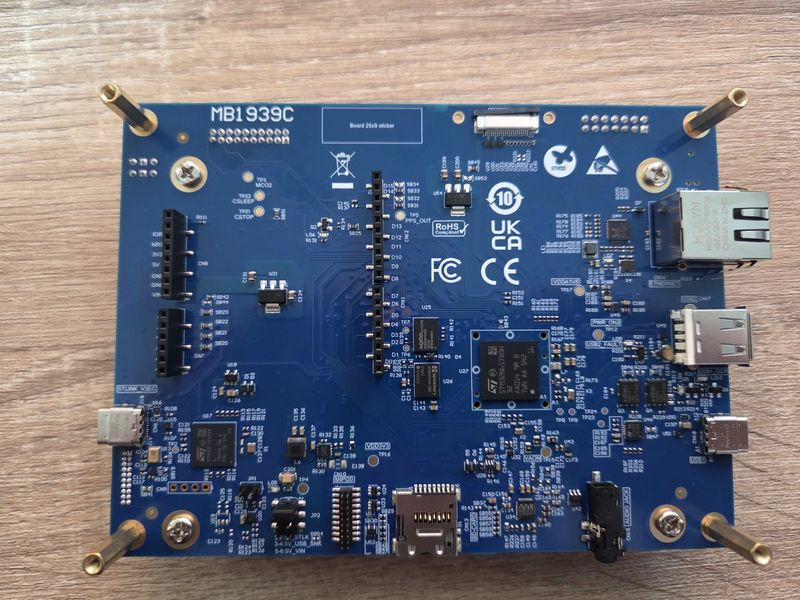

ST STM32N6570-DK

STM32N6570-DK Front

STM32N6570-DK Back
The STM32N6570-DK Discovery kit is based on the STM32N657X0H3Q Arm Cortex-M55 microcontroller.
Loading and running
Use SRAM loading for routine debugging and external flash for persistent boot, reset testing and standalone operation. The console is the ST-LINK Virtual COM Port at 115200 8N1.
Persistent flash
OpenOCD adds the STM32N6 ROM header to nuttx.bin and programs the
on-board NOR flash with its stmqspi driver. Use an OpenOCD version
that provides target/stm32n6x.cfg.
Build and program the persistent boot image with:
$ make flash
This erases the affected flash sectors, programs and verifies the image,
and resets the board. OPENOCD and OPENOCD_TARGET can override the
OpenOCD executable and target script. The board’s scripts/flash.cfg
configures the NOR pins, clocks and geometry for the native flash driver.
For a CMake build configured in build:
$ cmake --build build --target flash
Both targets build nuttx.bin before flashing. With CMake, OPENOCD
and OPENOCD_TARGET are cache variables set with -D at configuration.
The boot ROM loads NuttX from flash and starts it without a debugger or
separate FSBL.
The header and padding occupy the first 1 KiB at 0x34180000; NuttX is
linked at 0x34180400. The ROM download buffer limits the binary to
511 KiB. The generated image is unauthenticated and requires a device
that permits unauthenticated boot.
SRAM debugging
Build with make or cmake --build build. Start OpenOCD using its
standard ST-LINK and STM32N6 scripts:
$ openocd -f interface/stlink.cfg -c 'transport select swd' \
-f target/stm32n6x.cfg -c 'reset_config srst_only srst_nogate'
In another terminal, open the ELF with GDB. Use build/nuttx instead of
nuttx for CMake:
$ arm-none-eabi-gdb nuttx
(gdb) target extended-remote :3333
(gdb) monitor reset halt
(gdb) load
(gdb) set $msp = *(unsigned int *)0x34180400
(gdb) set $pc = *(unsigned int *)0x34180404
(gdb) hbreak nx_start
(gdb) continue
load writes the ELF sections into SRAM without programming external
flash. The next two commands initialize the stack pointer and entry point
from the vector table. Continue again after reaching nx_start to run
NSH. Reset before each reload; resetting after load boots the image
stored in flash instead. The SRAM image is lost on power-off.
To inspect an already running image, attach with its matching ELF and omit the reset, load and register-setting commands.
NSH enables CONFIG_STM32N6_DEBUG to reopen debug access after ROM boot
and includes debug symbols. These debugging steps require an installed
image that enables debug access. Stop GDB and OpenOCD before running either
flash target.
Configurations
nsh
Minimal NuttShell configuration.